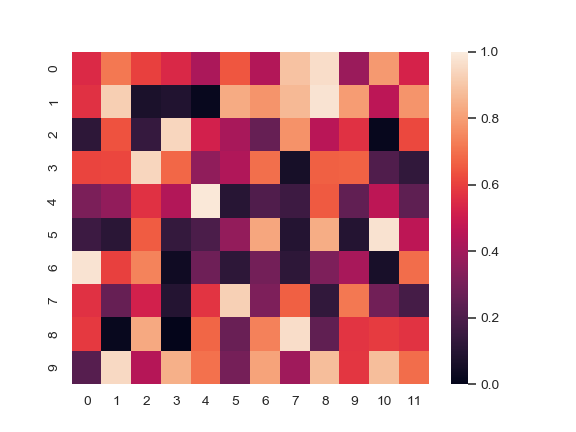
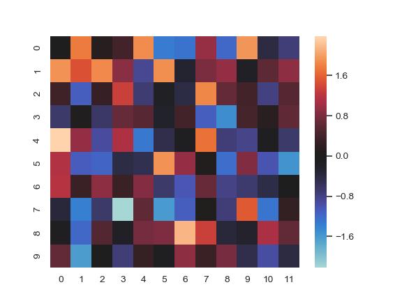
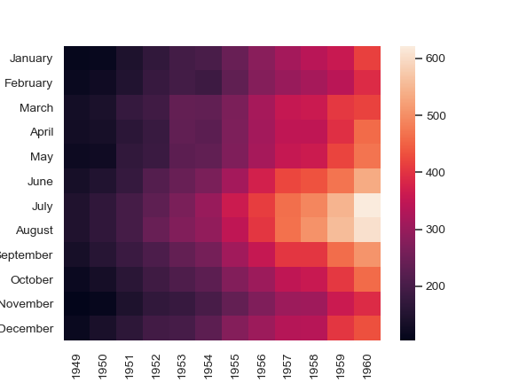
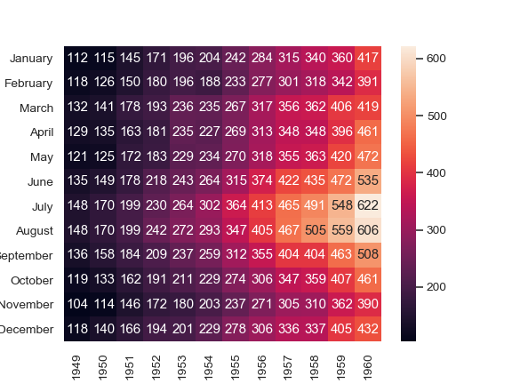
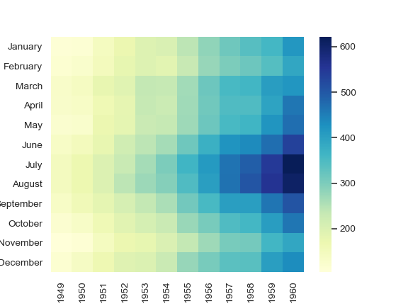
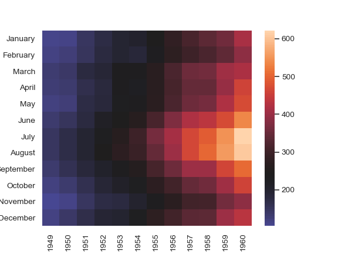
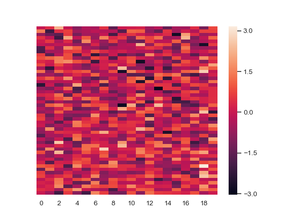
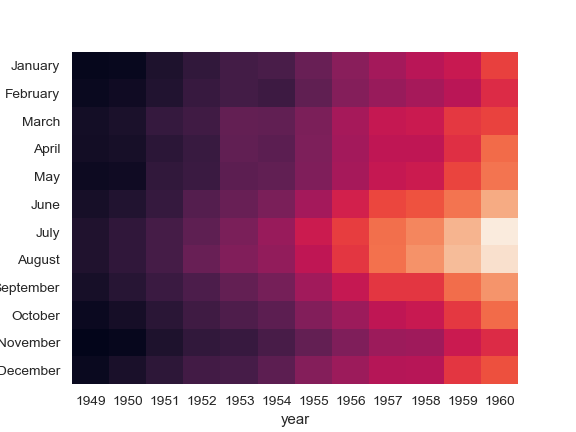
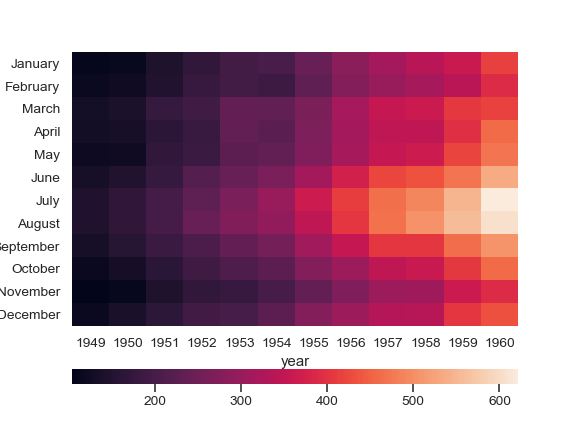
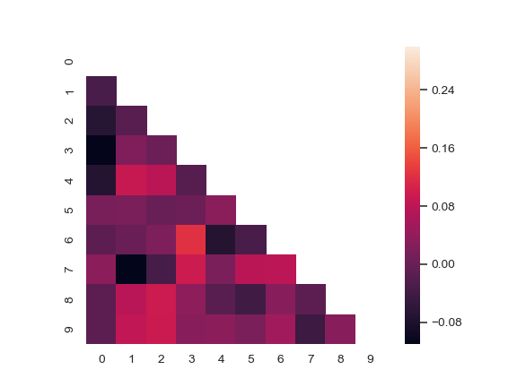

seaborn.heatmap¶
-
seaborn.heatmap(data, vmin=None, vmax=None, cmap=None, center=None, robust=False, annot=None, fmt='.2g', annot_kws=None, linewidths=0, linecolor='white', cbar=True, cbar_kws=None, cbar_ax=None, square=False, xticklabels='auto', yticklabels='auto', mask=None, ax=None, **kwargs)¶ Plot rectangular data as a color-encoded matrix.
This is an Axes-level function and will draw the heatmap into the currently-active Axes if none is provided to the
axargument. Part of this Axes space will be taken and used to plot a colormap, unlesscbaris False or a separate Axes is provided tocbar_ax.Parameters: - data : rectangular dataset
2D dataset that can be coerced into an ndarray. If a Pandas DataFrame is provided, the index/column information will be used to label the columns and rows.
- vmin, vmax : floats, optional
Values to anchor the colormap, otherwise they are inferred from the data and other keyword arguments.
- cmap : matplotlib colormap name or object, or list of colors, optional
The mapping from data values to color space. If not provided, the default will depend on whether
centeris set.- center : float, optional
The value at which to center the colormap when plotting divergant data. Using this parameter will change the default
cmapif none is specified.- robust : bool, optional
If True and
vminorvmaxare absent, the colormap range is computed with robust quantiles instead of the extreme values.- annot : bool or rectangular dataset, optional
If True, write the data value in each cell. If an array-like with the same shape as
data, then use this to annotate the heatmap instead of the raw data.- fmt : string, optional
String formatting code to use when adding annotations.
- annot_kws : dict of key, value mappings, optional
Keyword arguments for
ax.textwhenannotis True.- linewidths : float, optional
Width of the lines that will divide each cell.
- linecolor : color, optional
Color of the lines that will divide each cell.
- cbar : boolean, optional
Whether to draw a colorbar.
- cbar_kws : dict of key, value mappings, optional
Keyword arguments for fig.colorbar.
- cbar_ax : matplotlib Axes, optional
Axes in which to draw the colorbar, otherwise take space from the main Axes.
- square : boolean, optional
If True, set the Axes aspect to “equal” so each cell will be square-shaped.
- xticklabels, yticklabels : “auto”, bool, list-like, or int, optional
If True, plot the column names of the dataframe. If False, don’t plot the column names. If list-like, plot these alternate labels as the xticklabels. If an integer, use the column names but plot only every n label. If “auto”, try to densely plot non-overlapping labels.
- mask : boolean array or DataFrame, optional
If passed, data will not be shown in cells where
maskis True. Cells with missing values are automatically masked.- ax : matplotlib Axes, optional
Axes in which to draw the plot, otherwise use the currently-active Axes.
- kwargs : other keyword arguments
All other keyword arguments are passed to
ax.pcolormesh.
Returns: - ax : matplotlib Axes
Axes object with the heatmap.
See also
clustermap- Plot a matrix using hierachical clustering to arrange the rows and columns.
Examples
Plot a heatmap for a numpy array:
>>> import numpy as np; np.random.seed(0) >>> import seaborn as sns; sns.set() >>> uniform_data = np.random.rand(10, 12) >>> ax = sns.heatmap(uniform_data)
Change the limits of the colormap:
>>> ax = sns.heatmap(uniform_data, vmin=0, vmax=1)
Plot a heatmap for data centered on 0 with a diverging colormap:
>>> normal_data = np.random.randn(10, 12) >>> ax = sns.heatmap(normal_data, center=0)
Plot a dataframe with meaningful row and column labels:
>>> flights = sns.load_dataset("flights") >>> flights = flights.pivot("month", "year", "passengers") >>> ax = sns.heatmap(flights)
Annotate each cell with the numeric value using integer formatting:
>>> ax = sns.heatmap(flights, annot=True, fmt="d")
Add lines between each cell:
>>> ax = sns.heatmap(flights, linewidths=.5)

Use a different colormap:
>>> ax = sns.heatmap(flights, cmap="YlGnBu")
Center the colormap at a specific value:
>>> ax = sns.heatmap(flights, center=flights.loc["January", 1955])
Plot every other column label and don’t plot row labels:
>>> data = np.random.randn(50, 20) >>> ax = sns.heatmap(data, xticklabels=2, yticklabels=False)
Don’t draw a colorbar:
>>> ax = sns.heatmap(flights, cbar=False)
Use different axes for the colorbar:
>>> grid_kws = {"height_ratios": (.9, .05), "hspace": .3} >>> f, (ax, cbar_ax) = plt.subplots(2, gridspec_kw=grid_kws) >>> ax = sns.heatmap(flights, ax=ax, ... cbar_ax=cbar_ax, ... cbar_kws={"orientation": "horizontal"})
Use a mask to plot only part of a matrix
>>> corr = np.corrcoef(np.random.randn(10, 200)) >>> mask = np.zeros_like(corr) >>> mask[np.triu_indices_from(mask)] = True >>> with sns.axes_style("white"): ... ax = sns.heatmap(corr, mask=mask, vmax=.3, square=True)
